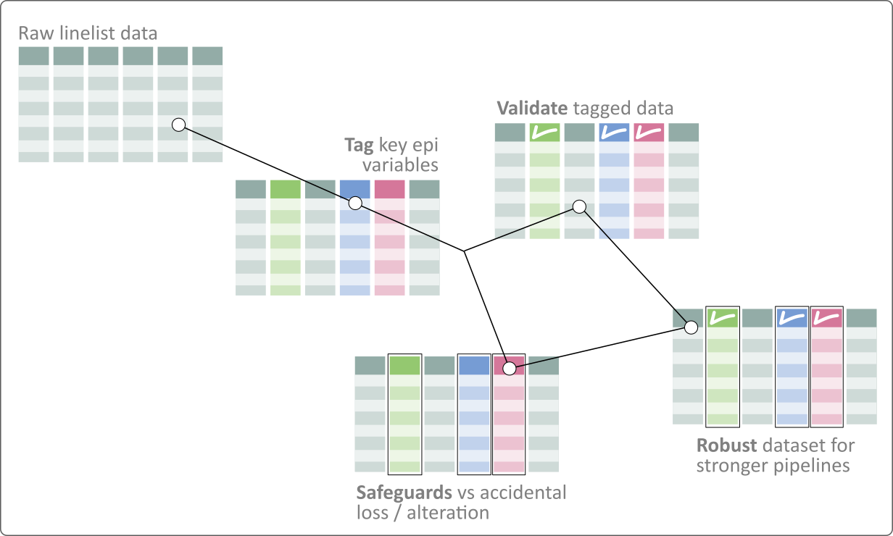
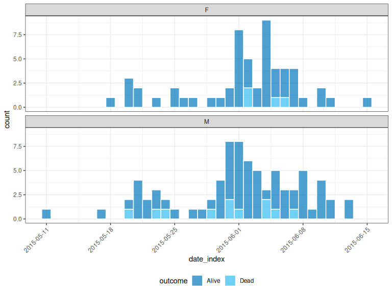

linelist provides a safe entry point to the Epiverse software ecosystem, adding a foundational layer through tagging, validation, and safeguarding epidemiological data, to help make data pipelines more straightforward and robust.
Installation
Stable version
Our stable versions are released on CRAN, and can be installed using:
install.packages("linelist", build_vignettes = TRUE)Development version
The development version of linelist can be installed from GitHub with:
if (!require(pak)) {
install.packages("pak")
}
pak::pak("epiverse-trace/linelist")Usage
knitr::include_graphics("man/figures/linelist_infographics.png")
linelist works by tagging key epidemiological data in a data.frame or a tibble to facilitate and strengthen data pipelines. The resulting object is a linelist object, which extends data.frame (or tibble) by providing three types of features:
a tagging system to identify key data, enabling access to these data using their tags rather than actual names, which may change over time and across datasets
validation of the tagged variables (making sure they are present and of the right type/class)
safeguards against accidental losses of tagged variables in common data handling operations
The short example below illustrates these different features. See the Documentation section for more in-depth examples and details about linelist objects.
# load packages and a dataset for the example
# -------------------------------------------
library(linelist)
library(dplyr)
#>
#> Attaching package: 'dplyr'
#> The following objects are masked from 'package:stats':
#>
#> filter, lag
#> The following objects are masked from 'package:base':
#>
#> intersect, setdiff, setequal, union
dataset <- outbreaks::mers_korea_2015$linelist
head(dataset)
#> id age age_class sex place_infect reporting_ctry
#> 1 SK_1 68 60-69 M Middle East South Korea
#> 2 SK_2 63 60-69 F Outside Middle East South Korea
#> 3 SK_3 76 70-79 M Outside Middle East South Korea
#> 4 SK_4 46 40-49 F Outside Middle East South Korea
#> 5 SK_5 50 50-59 M Outside Middle East South Korea
#> 6 SK_6 71 70-79 M Outside Middle East South Korea
#> loc_hosp dt_onset dt_report
#> 1 Pyeongtaek St. Mary, Hospital, Pyeongtaek, Gyeonggi 2015-05-11 2015-05-19
#> 2 Pyeongtaek St. Mary, Hospital, Pyeongtaek, Gyeonggi 2015-05-18 2015-05-20
#> 3 Pyeongtaek St. Mary, Hospital, Pyeongtaek, Gyeonggi 2015-05-20 2015-05-20
#> 4 Pyeongtaek St. Mary, Hospital, Pyeongtaek, Gyeonggi 2015-05-25 2015-05-26
#> 5 365 Yeollin Clinic, Seoul 2015-05-25 2015-05-27
#> 6 Pyeongtaek St. Mary, Hospital, Pyeongtaek, Gyeonggi 2015-05-24 2015-05-28
#> week_report dt_start_exp dt_end_exp dt_diag outcome dt_death
#> 1 2015_21 2015-04-18 2015-05-04 2015-05-20 Alive <NA>
#> 2 2015_21 2015-05-15 2015-05-20 2015-05-20 Alive <NA>
#> 3 2015_21 2015-05-16 2015-05-16 2015-05-21 Dead 2015-06-04
#> 4 2015_22 2015-05-16 2015-05-20 2015-05-26 Alive <NA>
#> 5 2015_22 2015-05-17 2015-05-17 2015-05-26 Alive <NA>
#> 6 2015_22 2015-05-15 2015-05-17 2015-05-28 Dead 2015-06-01
# check known tagged variables
# ----------------------------
tags_names()
#> [1] "id" "date_onset" "date_reporting" "date_admission"
#> [5] "date_discharge" "date_outcome" "date_death" "gender"
#> [9] "age" "location" "occupation" "hcw"
#> [13] "outcome"
# build a linelist
# ----------------
x <- dataset %>%
tibble() %>%
make_linelist(
date_onset = "dt_onset", # date of onset
date_reporting = "dt_report", # date of reporting
occupation = "age" # mistake
)
x
#>
#> // linelist object
#> # A tibble: 162 × 15
#> id age age_class sex place_infect reporting_ctry loc_hosp dt_onset
#> <chr> <int> <chr> <fct> <fct> <fct> <fct> <date>
#> 1 SK_1 68 60-69 M Middle East South Korea Pyeongt… 2015-05-11
#> 2 SK_2 63 60-69 F Outside Middl… South Korea Pyeongt… 2015-05-18
#> 3 SK_3 76 70-79 M Outside Middl… South Korea Pyeongt… 2015-05-20
#> 4 SK_4 46 40-49 F Outside Middl… South Korea Pyeongt… 2015-05-25
#> 5 SK_5 50 50-59 M Outside Middl… South Korea 365 Yeo… 2015-05-25
#> 6 SK_6 71 70-79 M Outside Middl… South Korea Pyeongt… 2015-05-24
#> 7 SK_7 28 20-29 F Outside Middl… South Korea Pyeongt… 2015-05-21
#> 8 SK_8 46 40-49 F Outside Middl… South Korea Seoul C… 2015-05-26
#> 9 SK_9 56 50-59 M Outside Middl… South Korea Pyeongt… NA
#> 10 SK_10 44 40-49 M Outside Middl… China Pyeongt… 2015-05-21
#> # ℹ 152 more rows
#> # ℹ 7 more variables: dt_report <date>, week_report <fct>, dt_start_exp <date>,
#> # dt_end_exp <date>, dt_diag <date>, outcome <fct>, dt_death <date>
#>
#> // tags: date_onset:dt_onset, date_reporting:dt_report, occupation:age
tags(x) # check available tags
#> $date_onset
#> [1] "dt_onset"
#>
#> $date_reporting
#> [1] "dt_report"
#>
#> $occupation
#> [1] "age"validate_linelist() will error if one of your tagged column doesn’t have the correct type:
# validation of tagged variables
# ------------------------------
## (this flags a likely mistake: occupation should not be an integer)
validate_linelist(x)
#> Error: Some tags have the wrong class:
#> - occupation: Must inherit from class 'character'/'factor', but has class 'integer'
# change tags: fix mistakes, add new ones
# ---------------------------------------
x <- x %>%
set_tags(
occupation = NULL, # tag removal
gender = "sex", # new tag
outcome = "outcome"
)
# safeguards against actions losing tags
# --------------------------------------
## attemping to remove geographical info but removing dates by mistake
x_no_geo <- x %>%
select(-(5:8))
#> Warning: The following tags have lost their variable:
#> date_onset:dt_onsetFor stronger pipelines, you can even trigger errors upon loss:
lost_tags_action("error")
#> Lost tags will now issue an error.
x_no_geo <- x %>%
select(-(5:8))
#> Error: The following tags have lost their variable:
#> date_onset:dt_onset
x_no_geo <- x %>%
select(-(5:7))
## to revert to default behaviour (warning upon error)
lost_tags_action()
#> Lost tags will now issue a warning.Alternatively, content can be accessed by tags:
x_no_geo %>%
select(has_tag(c("date_onset", "outcome")))
#> Warning: The following tags have lost their variable:
#> date_reporting:dt_report, gender:sex
#>
#> // linelist object
#> # A tibble: 162 × 2
#> dt_onset outcome
#> <date> <fct>
#> 1 2015-05-11 Alive
#> 2 2015-05-18 Alive
#> 3 2015-05-20 Dead
#> 4 2015-05-25 Alive
#> 5 2015-05-25 Alive
#> 6 2015-05-24 Dead
#> 7 2015-05-21 Alive
#> 8 2015-05-26 Alive
#> 9 NA Alive
#> 10 2015-05-21 Alive
#> # ℹ 152 more rows
#>
#> // tags: date_onset:dt_onset, outcome:outcome
x_no_geo %>%
tags_df()
#> # A tibble: 162 × 4
#> date_onset date_reporting gender outcome
#> <date> <date> <fct> <fct>
#> 1 2015-05-11 2015-05-19 M Alive
#> 2 2015-05-18 2015-05-20 F Alive
#> 3 2015-05-20 2015-05-20 M Dead
#> 4 2015-05-25 2015-05-26 F Alive
#> 5 2015-05-25 2015-05-27 M Alive
#> 6 2015-05-24 2015-05-28 M Dead
#> 7 2015-05-21 2015-05-28 F Alive
#> 8 2015-05-26 2015-05-29 F Alive
#> 9 NA 2015-05-29 M Alive
#> 10 2015-05-21 2015-05-29 M Alive
#> # ℹ 152 more rowslinelist can also be connected to the incidence2 package for pipelines focused on aggregated count data:
library(incidence2)
#> Loading required package: grates
x_no_geo %>%
tags_df() %>%
incidence("date_onset", groups = c("gender", "outcome")) %>%
plot(
fill = "outcome",
angle = 45,
nrow = 2,
border_colour = "white",
legend = "bottom"
)
Documentation
More detailed documentation can be found at: https://epiverse-trace.github.io/linelist/
In particular:
Getting help
To ask questions or give us some feedback, please use the github issues system.
Data privacy
Case line lists may contain personally identifiable information (PII). While linelist provides a way to store this data in R, it does not currently provide tools for data anonymization. The user is responsible for respecting individual privacy and ensuring PII is handled with the required level of confidentiality, in compliance with applicable laws and regulations for storing and sharing PII.
Note that PII is rarely needed for common analytics tasks, so that in many instances it may be advisable to remove PII from the data before sharing them with analytics teams.
Development
Lifecycle
This package is currently maturing, as defined by the RECON software lifecycle. This means that essential features and mechanisms are present and stable but minor breaking changes, or function renames may still occur sporadically.
Contributions
Contributions are welcome via pull requests.
Code of Conduct
Please note that the linelist project is released with a Code of Conduct. By contributing to this project, you agree to abide by its terms.
Notes
This package is a reboot of the RECON package linelist. Unlike its predecessor, the new package focuses on the implementation of a linelist class. The data cleaning features of the original package will eventually be re-implemented for linelist objects, albeit likely in a separate package.